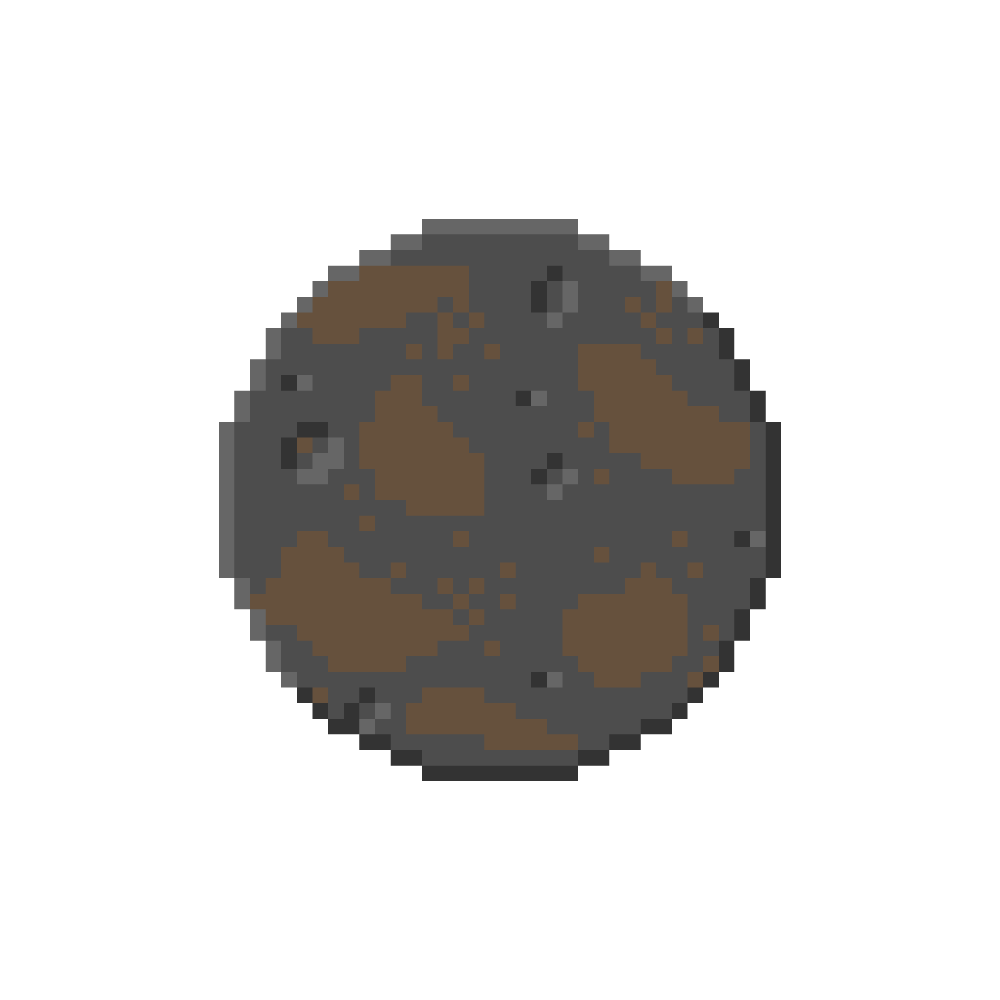

Trappist-1b

Scientific Stats:
Star: TRAPPIST-1
Mass: 8,400,000,000,000,000,000,000,000 lbs.
Surface Temperature: 447 Fº
Orbital Period: 33.6 Hours
Distance from star: 0.01154 AU
Discovery Date: 5/2/2016
Everyday Stats:
The star that Trappist-1b orbits is Trappist-1
Trappist-1b's mass is about 1.4 Earths
Trappist-1b's planet type is a Super Earth, a planet similar to Earth
The surface temperature of Trappist-1b is about 1.3 times of an average stovetop
In the time that Trappist-1b completes a full revolution around it's star, you have slept around 14 hours
The distance between Trappist-1b and its star is around 1.2 Suns
The date of discovery for Trappist-1b is May 2nd, 2016